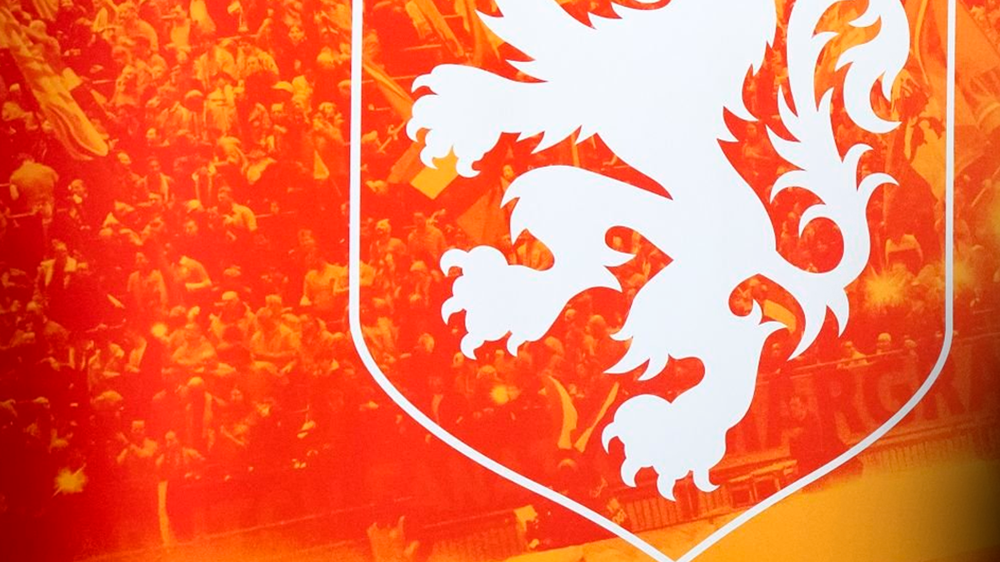

At Santa Design, we believe that an athlete's image is as decisive as their performance on the field. With over 4 years of specialization in the elite sports market, we transform careers into iconic visual brands.
From matchday flyers to global campaigns, our signature is present in 7 countries, connecting high-level players to their fans through impeccable and aggressive aesthetics. With over 200 exclusive artworks in our portfolio, we don't just deliver design; we deliver visual authority for those born to win.
Specialization in elite sports design
Global presence in professional football
For high-performance athletes
